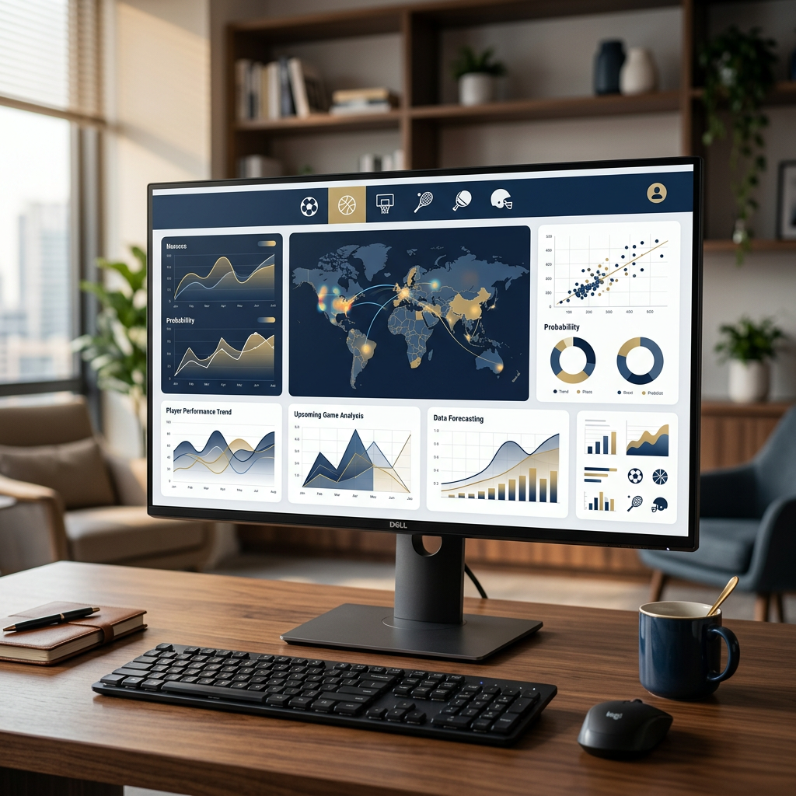

Introduzione
Attendere giorni, o addirittura settimane, per ricevere le proprie vincite è una delle frustrazioni più comuni tra i giocatori italiani che utilizzano piattaforme regolamentate. Proprio per questo motivo, sempre più utenti si rivolgono ai casinò non aams con prelievo immediato, piattaforme internazionali che garantiscono tempi di elaborazione drasticamente ridotti rispetto ai siti tradizionali. Questi operatori, licenziati da autorità riconosciute come Curacao, Malta Gaming Authority o altre giurisdizioni europee, offrono una gestione finanziaria più flessibile e veloce, senza rinunciare alla sicurezza.

La velocità nei pagamenti non significa assenza di controlli o scarsa affidabilità. Al contrario, i migliori siti casino non aams combinano tecnologie avanzate di crittografia, processi di verifica efficienti e metodi di pagamento moderni per garantire che i fondi raggiungano il conto del giocatore nel minor tempo possibile. In questa guida completa analizzeremo come funzionano questi operatori, quali sono i metodi più rapidi per prelevare, come evitare ritardi e quali criteri utilizzare per scegliere una piattaforma davvero affidabile.
L'obiettivo è fornire tutte le informazioni necessarie per gestire le vincite in modo sicuro, trasparente e soprattutto rapido, permettendo ai giocatori di avere il pieno controllo del proprio denaro senza vincoli burocratici inutili.
Cosa sono i casinò che pagano subito senza licenza AAMS?
I casinò non AAMS sono operatori di gioco online che operano con licenze rilasciate da autorità internazionali diverse dall'Agenzia delle Dogane e dei Monopoli italiana. Queste piattaforme seguono normative stabilite da enti regolatori come la Malta Gaming Authority (MGA), la Curaçao eGaming Authority, o la UK Gambling Commission, che consentono una maggiore flessibilità nelle operazioni bancarie e nelle politiche di pagamento.
La differenza sostanziale rispetto ai siti ADM (ex AAMS) risiede proprio nei tempi di elaborazione delle richieste di prelievo. Mentre le piattaforme italiane sono soggette a controlli amministrativi che possono richiedere diversi giorni lavorativi, i casinò non aams che pagano subito hanno processi automatizzati che permettono di accreditare le vincite in poche ore o addirittura minuti, a seconda del metodo scelto. Questo non significa che manchino i controlli di sicurezza: semplicemente, vengono gestiti in modo più efficiente e tecnologicamente avanzato.
Un altro elemento distintivo è l'assenza di limiti stringenti imposti dalla normativa italiana, come le restrizioni sui bonus o i tetti massimi di vincita. I giocatori che scelgono un casino senza aams possono accedere a un'offerta di gioco più ampia, con maggiore libertà nella gestione del proprio bankroll e condizioni spesso più vantaggiose per quanto riguarda promozioni e programmi fedeltà.
Come valutiamo i siti con prelievo immediato
Non tutti i casinò che dichiarano di offrire prelievi immediati mantengono realmente questa promessa. Per identificare le piattaforme davvero affidabili, utilizziamo una serie di criteri rigorosi basati su test reali e analisi approfondite:
- Velocità di elaborazione effettiva: Verifichiamo personalmente i tempi dichiarati confrontandoli con quelli reali. Un prelievo "istantaneo" dovrebbe essere processato entro massimo 24 ore, preferibilmente in pochi minuti per metodi come criptovalute o e-wallet.
- Limiti di prelievo: Analizziamo sia l'importo minimo che massimo prelevabile per transazione e per periodo (giornaliero, settimanale, mensile). I migliori operatori offrono limiti elevati o assenti per i giocatori VIP.
- Commissioni e costi nascosti: Controlliamo l'eventuale presenza di fee applicate dal casinò sui prelievi, che possono ridurre significativamente l'importo netto ricevuto.
- Sicurezza e crittografia: Verifichiamo che il sito utilizzi protocolli SSL a 256 bit, sistemi di autenticazione a due fattori e policy chiare sulla protezione dei dati personali e finanziari.
- Trasparenza nei termini e condizioni: Leggiamo attentamente le clausole relative ai prelievi per individuare eventuali vincoli nascosti legati a bonus, requisiti di scommessa o documentazione richiesta.
Trovare siti con prelievo immediato autentici richiede quindi un'analisi che va oltre le promesse pubblicitarie, concentrandosi su elementi tecnici verificabili e sull'esperienza concreta degli utenti.
I migliori metodi di pagamento per ricevere le vincite subito
La rapidità con cui si ricevono le vincite dipende in larga misura dal metodo di pagamento scelto. Anche il casinò più efficiente non può accelerare i tempi di elaborazione imposti dal circuito bancario tradizionale. Ecco perché conoscere le caratteristiche di ciascun sistema è fondamentale per ottimizzare i tempi di incasso. Molti casino che pagano subito offrono diverse opzioni, ciascuna con vantaggi specifici.
Criptovalute
Le criptovalute rappresentano senza dubbio il metodo più veloce per ricevere vincite dai casinò online. Bitcoin, Ethereum, Litecoin, Tether (USDT) e altre altcoin vengono processate direttamente sulla blockchain, senza intermediari bancari. Questo significa che, una volta approvata la richiesta da parte del casinò, i fondi vengono trasferiti al wallet del giocatore in pochi minuti, raramente più di un'ora.
I vantaggi delle criptovalute vanno oltre la velocità: garantiscono un elevato livello di anonimato, non hanno limiti territoriali, permettono transazioni di importi elevati e, nella maggior parte dei casi, non prevedono commissioni da parte del casinò (solo le fee di rete, generalmente minime). Sono la scelta ideale per chi cerca massima rapidità e privacy.
Portafogli Elettronici (E-Wallets)
Gli e-wallet come Skrill, Neteller, MuchBetter e ecoPayz rappresentano la seconda opzione migliore per velocità. Questi sistemi fungono da intermediari tra il casinò e il conto bancario del giocatore, permettendo transazioni molto rapide. La maggior parte delle piattaforme processa i prelievi verso e-wallet entro 0-24 ore.
Il vantaggio principale è la facilità d'uso combinata con un buon livello di sicurezza. Gli e-wallet richiedono una verifica del conto meno complessa rispetto alle carte di credito e offrono spesso programmi fedeltà o cashback. Sono molto popolari tra gli utenti dei siti casino non aams proprio per l'equilibrio tra velocità, costi contenuti e affidabilità.
Carte di Credito e Bonifici
Visa, Mastercard e bonifici bancari tradizionali sono i metodi più lenti per ricevere vincite, anche quando il casinò le approva immediatamente. Il problema risiede nei tempi di elaborazione bancari: le carte di credito possono richiedere 1-3 giorni lavorativi, mentre i bonifici possono arrivare fino a 5-7 giorni, specialmente per transazioni internazionali.
Sebbene siano metodi sicuri e universalmente accettati, non sono la scelta ideale per chi cerca prelievi rapidi. Inoltre, alcune banche italiane potrebbero bloccare o ritardare transazioni provenienti da casinò esteri, richiedendo verifiche aggiuntive che prolungano ulteriormente i tempi.
Come richiedere un prelievo: Guida passo dopo passo
Effettuare un prelievo da un casinò online è un processo generalmente semplice, ma seguire correttamente tutti i passaggi aiuta a evitare ritardi o problemi. Ecco la procedura standard:
- Accedi al tuo conto giocatore e verifica che il saldo prelevabile sia sufficiente. Attenzione: il saldo bonus con requisiti di scommessa attivi non può essere prelevato.
- Vai alla sezione "Cassa" o "Prelievi" del sito, solitamente accessibile dal menu principale o dal profilo utente.
- Seleziona il metodo di prelievo preferito tra quelli disponibili. Per velocizzare il processo, scegli lo stesso metodo utilizzato per il deposito.
- Inserisci l'importo che desideri prelevare, rispettando i limiti minimi e massimi indicati per il metodo scelto.
- Conferma i dettagli e invia la richiesta. Alcuni casinò inviano un'email di conferma con un link da cliccare per finalizzare l'operazione.
- Attendi l'elaborazione. I tempi variano in base al metodo e allo stato di verifica del tuo account.
Un consiglio importante: prima di richiedere il primo prelievo, completa eventuali requisiti di scommessa legati ai bonus ricevuti. Molte richieste vengono rifiutate proprio perché i giocatori tentano di prelevare fondi ancora vincolati a condizioni promozionali non soddisfatte.
L'importanza della verifica del conto (KYC) per la velocità
Anche il casinò più veloce non potrà accreditare vincite se il conto giocatore non è stato verificato. Il processo KYC (Know Your Customer) è obbligatorio per legge in tutte le giurisdizioni regolamentate e serve a prevenire frodi, riciclaggio di denaro e accesso da parte di minori.
La verifica richiede solitamente l'invio di tre tipi di documenti: un documento d'identità valido (carta d'identità, patente o passaporto), una prova di residenza recente (bolletta, estratto conto bancario o certificato di residenza non più vecchio di 3 mesi) e, in alcuni casi, una foto della carta di credito utilizzata per il deposito (oscurando i numeri centrali per sicurezza).
Il consiglio fondamentale è completare questo processo immediatamente dopo la registrazione, anche prima di giocare. In questo modo, quando arriverà il momento di prelevare le vincite, non ci saranno ritardi. I сasino non aams con prelievo immediato più efficienti elaborano la verifica KYC in 24-48 ore se i documenti sono corretti e leggibili.
Alcuni operatori offrono anche sistemi di verifica istantanea tramite riconoscimento biometrico o partnership con servizi di identity verification, riducendo i tempi a pochi minuti. Informarsi su queste possibilità può fare la differenza tra ricevere le vincite lo stesso giorno o dover attendere diversi giorni lavorativi.
Consigli per accelerare i tempi di incasso
Oltre alla scelta del metodo di pagamento e alla verifica del conto, esistono altre strategie per ottimizzare i tempi di prelievo:
- Usa lo stesso metodo per depositi e prelievi: La maggior parte dei casinò richiede che i prelievi vengano effettuati con lo stesso sistema usato per depositare, almeno fino a concorrenza dell'importo depositato. Questo velocizza i controlli antifrode.
- Completa la verifica KYC subito dopo la registrazione: Come già menzionato, non aspettare di vincere per inviare i documenti. La verifica preventiva elimina i tempi di attesa più lunghi.
- Evita weekend e festivi: Se utilizzi bonifici o carte di credito, ricorda che le banche non processano transazioni nei giorni non lavorativi. Richiedere un prelievo il venerdì potrebbe significare attendere fino a martedì.
- Sfrutta lo status VIP: Molti casinò offrono corsie preferenziali per i giocatori fedeli o high roller. Accumula punti fedeltà per accedere a livelli VIP che garantiscono prelievi prioritari e limiti più alti.
- Leggi attentamente i termini dei bonus: Prima di accettare promozioni, verifica i requisiti di scommessa e le eventuali restrizioni sui prelievi. Alcuni bonus impongono limiti massimi di incasso che potrebbero non essere vantaggiosi.
- Contatta il supporto clienti: Se hai urgenza, un messaggio al servizio assistenza può a volte accelerare l'elaborazione manuale della richiesta, specialmente se il tuo account è già verificato e in regola.
Applicare queste strategie può ridurre significativamente i tempi complessivi tra la richiesta di prelievo e l'effettivo accredito dei fondi sul conto personale.
Vantaggi e Svantaggi dei casinò a pagamento immediato
Come ogni soluzione, anche i casinò con prelievi rapidi presentano aspetti positivi e negativi che è importante considerare prima di scegliere dove giocare.
| Vantaggi | Svantaggi |
|---|---|
| Accesso rapido alle vincite (minuti o ore invece di giorni) | Potrebbe incentivare il re-deposito impulsivo delle vincite |
| Migliore gestione del flusso di cassa personale | Controlli antifrode più rigorosi su transazioni veloci |
| Limiti di prelievo generalmente più alti | Alcuni metodi rapidi (crypto) possono avere volatilità di valore |
| Maggiore flessibilità nella scelta dei metodi di pagamento | Necessità di familiarizzare con sistemi di pagamento meno tradizionali |
| Assenza di vincoli burocratici tipici della normativa italiana | Responsabilità fiscale gestita autonomamente dal giocatore |
La velocità nei pagamenti rappresenta indubbiamente un grande vantaggio per la libertà finanziaria del giocatore, ma richiede anche una maggiore disciplina personale. Avere accesso immediato alle vincite può essere un'arma a doppio taglio per chi fatica a gestire il bankroll in modo responsabile. Tuttavia, per giocatori consapevoli e organizzati, i benefici superano ampiamente gli svantaggi.
Differenze tra casinò AAMS e non AAMS: Tabella comparativa
| Caratteristica | Casinò AAMS/ADM | Casinò non AAMS |
|---|---|---|
| Tempi di prelievo | 3-7 giorni lavorativi | 0-24 ore (spesso istantaneo) |
| Metodi di pagamento | Limitati (carte, bonifici, pochi e-wallet) | Ampia varietà (crypto, e-wallet internazionali, carte) |
| Limiti di prelievo | Spesso più bassi e rigidi | Più alti o assenti per VIP |
| Verifica KYC | Obbligatoria e spesso lenta | Obbligatoria ma più veloce; alcuni offrono verifica istantanea |
| Commissioni prelievo | Rare ma presenti su alcuni metodi | Generalmente assenti, tranne fee di rete per crypto |
| Offerta bonus | Limitata dalla normativa italiana | Più generosa e variegata |
| Tassazione vincite | Prelievo alla fonte automatico | Responsabilità del giocatore |
| Supporto clienti | In italiano, orari limitati | Multilingue 24/7 (qualità variabile) |
Questa tabella evidenzia come le differenze più significative riguardino proprio la gestione finanziaria e la velocità operativa, elementi cruciali per chi cerca un'esperienza di gioco più fluida e meno vincolata da tempi burocratici.
Sicurezza e licenze: Come riconoscere un casinò affidabile
La velocità nei pagamenti non deve mai andare a scapito della sicurezza. Riconoscere un operatore affidabile è fondamentale per proteggere i propri fondi e i dati personali. Ecco gli indicatori chiave da verificare:
- Licenza valida: Controllare che il casinò possieda una licenza attiva rilasciata da autorità riconosciute (Malta Gaming Authority, Curaçao eGaming, UK Gambling Commission). Il numero di licenza deve essere visibile nel footer del sito e verificabile sul sito dell'ente regolatore.
- Crittografia SSL: L'indirizzo del sito deve iniziare con "https://" e mostrare il simbolo del lucchetto nella barra del browser, indicando che tutte le comunicazioni sono crittografate.
- Software certificati: I giochi devono provenire da provider riconosciuti (NetEnt, Microgaming, Pragmatic Play, Evolution Gaming) e avere certificazioni RNG (Random Number Generator) da laboratori indipendenti come eCOGRA o iTech Labs.
- Recensioni verificate: Consultare forum specializzati e siti di recensioni indipendenti per conoscere l'esperienza di altri giocatori, specialmente riguardo ai prelievi effettivamente ricevuti.
- Termini e condizioni chiari: Diffidare di operatori con clausole vaghe o contraddittorie, specialmente nelle sezioni relative a bonus e prelievi.
- Supporto clienti reattivo: Testare la qualità e i tempi di risposta del servizio assistenza prima di depositare, magari con domande sui tempi di prelievo casino esteri.
Un operatore serio e trasparente non ha problemi a fornire tutte queste informazioni in modo chiaro e facilmente accessibile. La regola generale è semplice: se qualcosa non è chiaro o sembra troppo bello per essere vero, è meglio cercare alternative più affidabili.
Gestione fiscale delle vincite da casinò esteri
Un aspetto spesso trascurato quando si parla di prelievo vincite casino stranieri riguarda gli obblighi fiscali. Mentre i casinò AAMS applicano automaticamente la ritenuta fiscale sulle vincite, nei casinò internazionali questa responsabilità ricade sul giocatore.
Secondo la normativa italiana, le vincite provenienti da giochi e scommesse sono soggette a tassazione. Il giocatore è tenuto a dichiarare le vincite nel proprio modello dei redditi e pagare l'imposta dovuta. L'aliquota e le modalità di calcolo possono variare in base all'importo complessivo e alla tipologia di gioco.
È fondamentale conservare documentazione completa di tutte le transazioni (depositi, vincite, prelievi) per dimostrare la provenienza dei fondi in caso di controlli. Alcuni giocatori scelgono di consultare un commercialista specializzato in diritto tributario per gestire correttamente questi adempimenti.
Ignorare gli obblighi fiscali può comportare sanzioni amministrative significative. La trasparenza e la corretta gestione delle vincite non solo è un obbligo legale, ma permette anche di godere serenamente dei propri guadagni senza preoccupazioni future.
Limiti di prelievo: Cosa aspettarsi
I limiti prelievo casino non aams variano considerevolmente tra operatori e dipendono da diversi fattori, tra cui il livello VIP del giocatore e il metodo di pagamento scelto.
Generalmente, gli importi minimi di prelievo si aggirano tra 10€ e 20€ per e-wallet e criptovalute, mentre possono salire a 50€-100€ per bonifici bancari. Per quanto riguarda i massimali, i casinò non AAMS tendono a essere molto più generosi rispetto alle piattaforme italiane: non è raro trovare limiti giornalieri di 5.000€-10.000€ che possono arrivare a 50.000€ o più per i membri VIP.
Alcuni operatori premium offrono prelievi illimitati per i giocatori high roller, eliminando completamente questo tipo di restrizione. È importante verificare questi parametri prima di registrarsi, specialmente se si prevede di giocare con importi elevati.
Un aspetto da considerare è che alcuni casinò applicano limiti mensili cumulativi: anche se il limite giornaliero è alto, potrebbe esserci un tetto massimo sull'importo totale prelevabile in un mese. Leggere attentamente i termini e condizioni permette di evitare sorprese spiacevoli.
Casino online prelievo immediato senza invio documenti: È possibile?
Molti giocatori cercano casino online prelievo immediato senza invio documenti, attratti dalla promessa di totale anonimato e assenza di burocrazia. La realtà è più complessa: non esistono casinò completamente regolamentati che permettano prelievi significativi senza alcuna forma di verifica.
Tuttavia, alcune piattaforme basate esclusivamente su criptovalute offrono processi semplificati dove la verifica KYC è richiesta solo per prelievi superiori a determinate soglie (tipicamente 2.000€-5.000€). Per importi inferiori, è possibile operare fornendo solo un indirizzo email e un wallet crypto.
Questi "crypto casino" rappresentano la massima espressione della filosofia pay-n-play: deposito istantaneo tramite blockchain, gioco immediato e prelievo in pochi minuti senza documenti. Il limite di questa soluzione è proprio la soglia oltre la quale diventa obbligatoria la verifica completa.
Per chi cerca massima privacy e non prevede di movimentare importi molto elevati, questa può essere un'opzione interessante. Per tutti gli altri, la verifica KYC rimane un passaggio inevitabile ma, come abbiamo visto, può essere completato rapidamente se gestito correttamente.
Migliori metodi pagamento casino non aams: Confronto dettagliato
Approfondendo la questione dei migliori metodi pagamento casino non aams, è utile confrontare nel dettaglio le caratteristiche di ciascuna opzione:
Bitcoin e Criptovalute
- Velocità: 5-30 minuti
- Commissioni: Fee di rete variabili (0,50€-5€ in base alla congestione blockchain)
- Limiti: Generalmente molto alti o assenti
- Anonimato: Elevato
- Ideale per: Grandi importi, massima privacy, velocità assoluta
Skrill
- Velocità: 0-24 ore
- Commissioni: Generalmente assenti dal casinò; Skrill applica 2% sul cambio valuta
- Limiti: Moderati (fino a 5.000€ per transazione, espandibili con verifica completa)
- Anonimato: Medio
- Ideale per: Equilibrio tra velocità e facilità d'uso
Neteller
- Velocità: 0-24 ore
- Commissioni: Simili a Skrill
- Limiti: Comparabili a Skrill
- Anonimato: Medio
- Ideale per: Alternativa consolidata a Skrill con programma fedeltà
MuchBetter
- Velocità: 0-12 ore
- Commissioni: Basse o assenti
- Limiti: Moderati
- Anonimato: Medio-alto
- Ideale per: Utenti mobile, interfaccia semplice
Bonifico Bancario
- Velocità: 3-7 giorni lavorativi
- Commissioni: Variabili (10€-30€ per bonifici internazionali)
- Limiti: Generalmente molto alti
- Anonimato: Basso
- Ideale per: Grandi importi quando la velocità non è prioritaria
La scelta ottimale dipende dalle priorità individuali: chi cerca velocità assoluta opterà per crypto, chi preferisce un compromesso tra velocità e semplicità sceglierà e-wallet, chi movimenta importi molto elevati potrebbe preferire bonifici nonostante i tempi più lunghi.